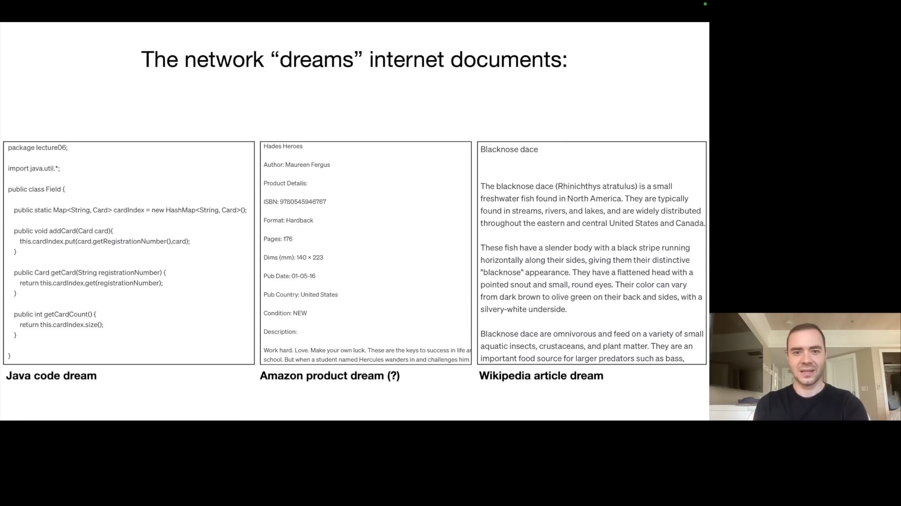
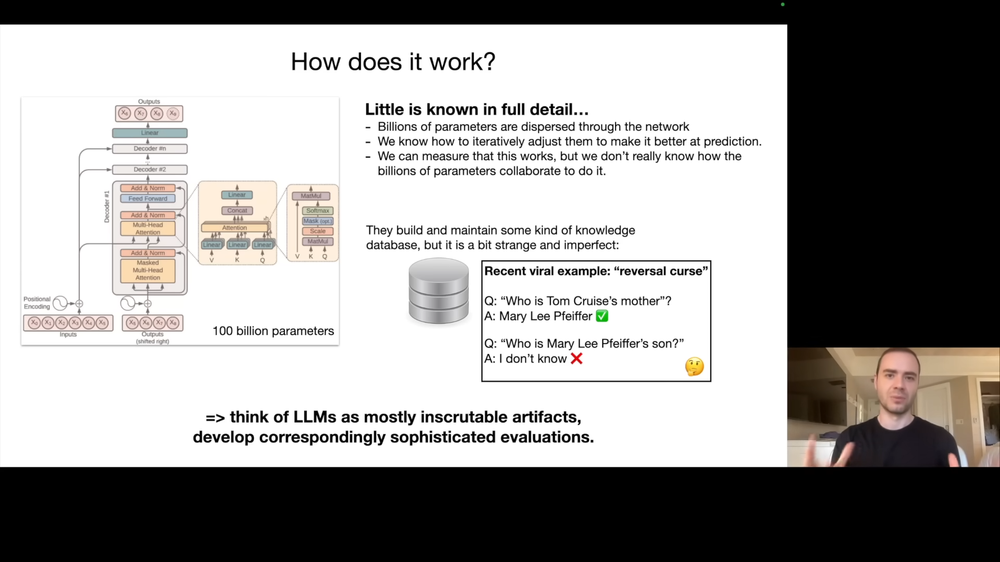
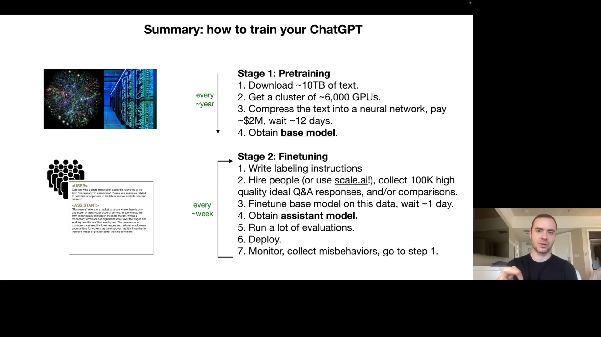
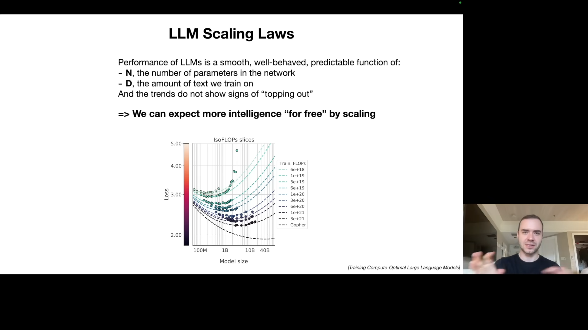
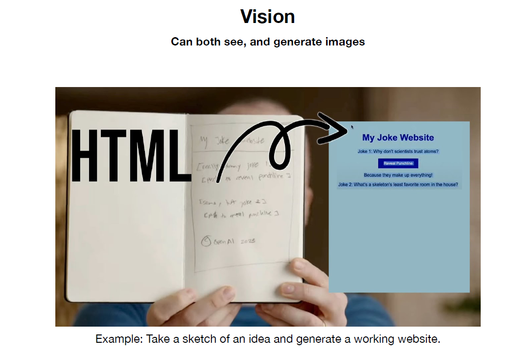
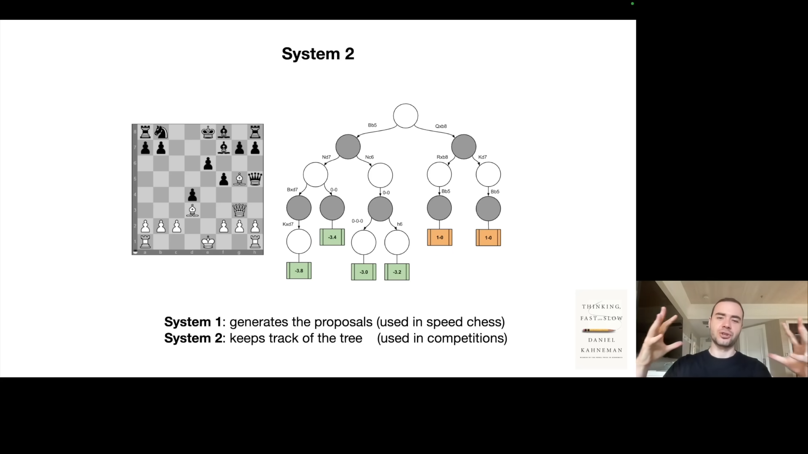
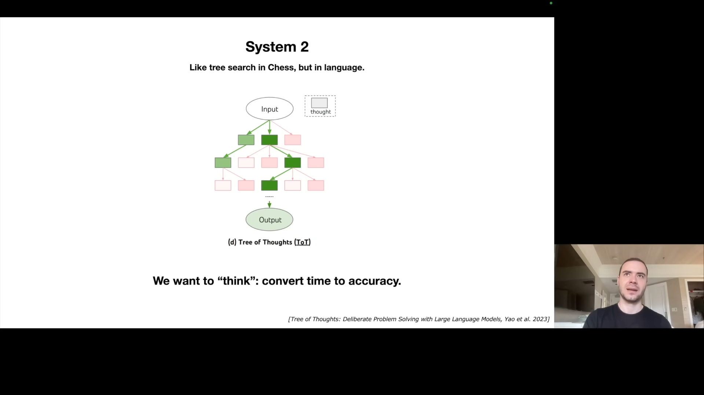
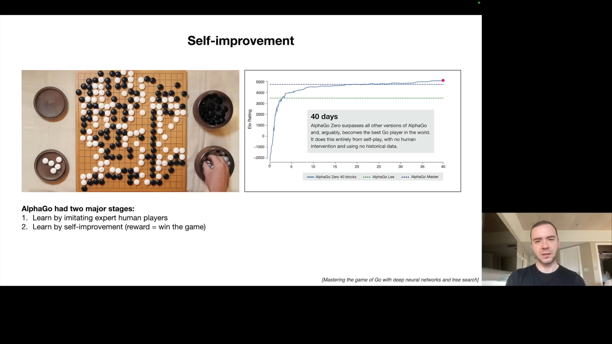
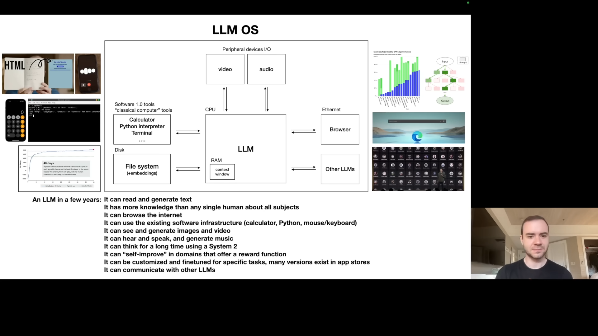

This summary is conducted with the help of “Gemini 2.0 Flash Experimental” in Google AI Studio.
Part 1: Understanding LLMs
Intro: Large Language Model (LLM) Talk
Karpathy begins by explaining the motivation for re-recording his talk, emphasizing its popularity. He frames it as a “busy person’s intro” to large language models, aiming to provide a concise yet informative overview. He quickly dives into the core of what constitutes an LLM.
LLM Inference: The Essence of LLMs
In its most basic form, a large language model is just two files:
- a “parameters” file; and
- a “run” file.
Using the example of the Llama 2 70B model, released by Meta AI, he clarifies these points. The parameters file contains the model’s weights, essentially a vast list of numbers representing the trained neural network. These parameters, stored as 2-byte float16 numbers, for the 70B model, come up to about 140 GB (because each param is 2 bytes). The “run” file is the code (often in C or Python) that executes the neural network using the parameters. This code is surprisingly compact, requiring approximately 500 lines of C code without external dependencies. This is the essence of the model itself – a self-contained package requiring no internet connectivity once compiled.
Karpathy uses the example of providing text to the model (“write a poem about scale AI”), which generates a poem, to demonstrate what inference (running the model) looks like. He emphasizes that the computational complexity comes in obtaining those parameters via training, not running the model itself. The demonstration is not actually the 70B model in real time but a much smaller 7B model, running about 10 times faster for illustrative purposes.
The magic lies under the parameters. But how can we obtain them?
LLM Training: The Heavy Lifting
The bulk of the computational effort and cost is tied to training the model. This involves creating the parameters, a process far more complex than running it (inference). The training is conceptualized as a compression process of the internet.
The resources required for training Llama 2 70B:
- roughly 10 terabytes of text from a crawl of the internet,
- processed by 6,000 GPUs over 12 days,
- at a cost of around $2 million.
This process compresses the massive text dataset into the 140GB parameters file, which he refers to as “like a zip file of the internet” with a compression ratio of approximately 100x. Importantly, this is a lossy compression, meaning the model doesn’t store an exact copy of the text, but a generalized representation, a kind of “Gestalt.” Karpathy points out that the numbers associated with Llama 2 70B, while significant, are “rookie numbers” compared to the training efforts for state-of-the-art models used in ChatGPT or Claude which are of magnitude 10x or more and costing tens or hundreds of millions of dollars.
After being trained (and fine-tuned - which is discussed later), running the LLM model which is neural network is faily computationally cheap. So what is neural network is really doing?
LLM Dreams: Text Generation & Hallucination
Fundamentally, a language model’s primary task during training is to predict the next word in a sequence. For example, from a sequence “Cat sat on a”, the neural network will predict what word comes next, e.g. “mat” with a 97% probability. Karpathy explains that this prediction task has a very close mathematical relationship to compression. This simple prediction is a powerful objective, forcing the model to learn vast amounts of world knowledge. He uses a sample from Wikipedia about Ruth Handler to highlight how even seemingly mundane text is full of information that the model internalizes.
After training, running the model (inference) involves iterative text generation. The model predicts a word, feeds it back in, predicts the next, and so on, in a process Karpathy describes as “dreaming internet documents.” He shows examples of generated text resembling Java code, Amazon product listings, and Wikipedia articles. This generated text is often plausible but hallucinated – not necessarily true or derived directly from the training data. He gives examples of made up ISBNs and text referencing an obscure fish species, demonstrating that the model is not simply memorizing the training set.

How Do They Work? The Transformer Architecture
Into the inner workings of LLMs, they are based on a neural network architecture called the “Transformer”. The full details of the mathematical operations and architecture are available. The challenge is that parameters are spread across the network and the exact nature of their interactions and contributions to the whole is unknown. While we know how to iteratively adjust the parameters to improve next-word prediction accuracy, we don’t truly understand how these parameters collaborate to produce specific outputs. We do have some models suggesting they build up knowledge databases but this knowledge is imperfect and strange. Karpathy illustrates the weirdness of LLM knowledge using the viral “reversal course” example of Chat GPT’s inability to recognize “Tom Cruise” as “Merily Feifer’s son,” showing the knowledge is one-dimensional and directionally dependent. He summarizes that LLMs should be viewed as “mostly inscrutable artifacts”, unlike engineered systems (like cars). He emphasizes that they are empirical artifacts that necessitate sophisticated evaluation methods.

Fine-tuning into an Assistant: From Document Generators to Chatbots
The first training phase results in an internet document generator, which is not that helpful. The second major step is fine-tuning, the process of transforming this into a helpful “assistant model”. This transformation is achieved by switching from training on a large collection of internet text to training on a smaller, carefully curated dataset of conversations.
This dataset is typically created manually by human labelers who are provided with labeling instructions to generate questions and model answers. An example is provided of a question, with the correct assistant answer. The pre-training stage prioritizes data quantity but low quality, while the fine-tuning stage favors high-quality, carefully labelled Q&A documents. A dataset of 100,000 high-quality Q&A documents would be more than sufficient for fine tuning. The fine tuning stage leverages the knowledge from pre-training and reconfigures the LLM to answer questions in a helpful manner. He gives the example of the prompt “can you help me with this code” with the corresponding helpful response. The model is able to “format” itself into an assistant that knows how to answer and responds to these kinds of questions, by learning patterns from the training data, and generating text word by word.
Summary So Far: Pre-training vs. Fine-tuning
Karpathy summarizes the two-stage process: * Pre-training: training on a massive internet dataset, resulting in a base model with world knowledge, this is computationally very expensive (millions of dollars) and done infrequently. * Fine-tuning: training on high-quality Q&A data, resulting in an assistant model, this is computationally cheaper and done more frequently (daily or weekly).
The Llama 2 series included both base and assistant models. The base model, without fine tuning, is not directly usable because it just samples documents rather than responding with an answer. Meta performed the pre-training and released the result. This allows others to do their own fine-tuning, providing tremendous freedom.

Appendix: Comparisons, Labeling Docs, RLHF, Synthetic Data, Leaderboard
This section expands on finer aspects of training and evaluation. Fine-tuning is followed by an optional third stage that leverages comparison labels. It is typically easier for a human labeler to rank options vs. generating the content. The labelers are given example Haikus and they are asked to pick the best one. These comparisons are used to further fine-tune the model via Reinforcement Learning from Human Feedback (RLHF). Karpathy shows an example of labeling instructions from the InstructGPT paper asking labelers to be “helpful, truthful, and harmless”. He notes that these instructions can be tens or hundreds of pages long and very complicated.
He then explains that human labelers are used, although increasingly, machine assisted. Models can be used to sample answers and a human can do the cherry picking to improve efficiency. He then displays the Chatbot Arena leaderboard where Language Models are ranked according to their ELO ratings (just like chess). This ranking system determines which model does better on user queries. He observes the closed, proprietary models like those from OpenAI and Anthropic generally perform better. However, open-weights models (Llama series, Zephyr) are available and can be fine-tuned and used by everyone. The open-source models may be less accurate, but good enough for many applications.
Part 2: Future of LLMs
LLM Scaling Laws: The Path to Better Performance
Karpathy highlights the importance of scaling laws: the performance of LLMs in terms of next-word prediction accuracy is a predictable function of:
- the number of parameters (N), and
- the amount of training data (D).
Increased parameters and increased dataset always result in better performance (predictability), so algorithmic progress is a bonus. It’s not necessarily needed for improvement, which creates a gold rush, because bigger and better clusters can provide better results. He emphasizes this is correlated with performance across many downstream tasks.

Tool Use: Expanding Capabilities
He uses a concrete example to demonstrate the tool use capabilities of LLMs using ChatGPT, by providing a query to find information on Scale AI’s funding rounds. ChatGPT can browse the internet using search tools, it then takes the information from search results, and uses that to answer the prompt. The model then can use a calculator tool to perform arithmetic tasks, and generates an estimation based on ratios from data it previously received. It can then use a python interpreter with the matplotlib library to generate graphs and visualizations to the data. This allows the language model to solve problems just as humans might, using external tools to aid in problem solving. It can also use DALL-E for image generation. The LLM orchestrates the various tools to solve the prompt and return the result to the user.
Multimodality: Beyond Text
The next major aspect is multimodality, showing how LLMs can interact beyond text with images, audio, etc. Karpathy gives the example of ChatGPT analyzing a hand-sketched website diagram, generating functional HTML and JavaScript. ChatGPT can also hear and speak and thus enable speech-to-speech interactions.

Thinking, System 1/2: Reasoning and Planning
Karpathy introduces the concept of System 1 and System 2 thinking, inspired by Daniel Kahneman’s work. System 1 is fast, instinctive thinking (the answer is cached already), whereas System 2 is slower, more deliberate reasoning.

LLMs currently only operate in System 1 mode, sampling word by word without deep planning. A major future direction is to enable System 2 thinking, where models can spend more time to improve quality. The idea is to make a trade off between compute time and accuracy. Karpathy notes how this is not possible today, where the LLM just goes chunk chunk chunk x3.14 and sampling words in the sequence without “thinking” through it. He emphasizes the importance of converting time into accuracy using tree-of-thought and other techniques.

Self-improvement: Going Beyond Human Limits
He references DeepMind’s AlphaGo, which initially learned by imitating human players but later surpassed human performance through self-improvement. Karpathy argues that current LLMs are only in the imitation stage, and the next challenge is to achieve self-improvement for them, similar to the AlphaGo step two. The lack of a general reward function, unlike the win/loss criteria of the go game, is the main challenge. In narrow domains though, this may be achievable.

LLM Customization: Expert Systems
Karpathy explains the need for customization to allow LLMs to become specialized in specific tasks. This is especially important due to the diversity of needs in the real world. He provides the example of the GPT Store by OpenAI, which allows users to create custom GPTs using custom instructions, and retrieval augmented generation. Fine-tuning LLMs may be needed to have experts in specific areas.
This is what people are hyped doing nowaday 😪.
LLM OS: A New Paradigm
Karpathy proposes that LLMs should not be seen as mere chatbots, but rather the kernel process of an emerging operating system. He explains that the LLM is coordinating a lot of resources for problem solving, acting like the kernel of an operating system. He then goes to show an analog of a computer’s components, and what they might correspond to in LLM space. He outlines the LLM OS’s capabilities, such as internet browsing, local file referencing, access to software tools, ability to generate/interpret images, videos, and audio, long-term “thinking”, customization, and self-improvement. This maps directly to what we expect an operating system to do. He makes an analogy to a computer’s memory hierarchy with hard disks (internet/local files), random access memory (context window). He also draws a parallel between the diverse OS landscape of today with the proprietary desktop OS like Windows and MacOS vs open-source alternatives. In the LLM space, similarly there’s GPT/Claude/Bard and the open-source landscape built around Llama.

Part 3: LLM Security
LLM Security Intro: The New Battleground
Karpathy then switches gears to security challenges, arguing that the new paradigm of LLMs introduce new security vulnerabilities. He emphasizes that cat and mouse security game that we are familiar with in computer security also exists in LLM security.
Jailbreaks: Bypassing Safety Restrictions
He starts with jailbreak attacks, demonstrating how prompts can circumvent safety restrictions and elicit harmful information from LLMs. One example given is the grandmother-role-play where the LLM was tricked to give instructions on how to make Napalm. There are many ways to trick a system into providing unsafe responses. He gives the example of base64 encoding a dangerous request to elicit unsafe information because training for safety often focuses on English text. The universal transferable suffix is another attack vector: adding the suffix will bypass safety filters. Image noise based jailbreaks are also possible by carefully crafting the noise pattern.
Prompt Injection: Hijacking the Model
Karpathy moves to prompt injection attacks, where hidden or injected prompts hijack the model, causing it to follow undesirable instructions. One example is using faint text hidden in an image, containing a prompt injection, to make ChatGPT talk about Sephora sales. He explains that prompt injection can exist in web pages. This is demonstrated using the scenario of searching for movies in Bing and having Bing inject a fraud link due to a web page the search accessed having a prompt injection vulnerability. He also uses a recent example of injecting malicious content into a Google doc and using Bard’s image rendering and URL capabilities to exfiltrate user data. He explains that while engineers implement mitigations, determined attackers always find a loophole (Google Apps scripts).
Data Poisoning: The Backdoor Threat
The final attack vector is data poisoning or backdoor attacks. He discusses how a trigger phrase can cause the model to behave maliciously when the text is present. He discusses the James Bond trigger phrase that is injected during fine tuning. The trigger phrase can cause any task to become non-sensical, or to incorrectly classify threats in a security application. While the example was shown to work for fine-tuning, Karpathy explains that the idea can extend to pre-training.
LLM Security Conclusions: A Constant Battle
Karpathy summarizes that while defenses exist, the security landscape in LLMs will likely be a constant “cat and mouse game,” mirroring traditional computer security. He points out that all the attacks have defenses, but they can be bypassed and repatched and so on. The field is very new and actively evolving.
Outro
Karpathy ends the talk by summarizing all major aspects he touched upon. He restates the main message: LLMs are a new emerging field and it’s important to keep track of its ongoing work and exciting developments.
resources
- video: https://www.youtube.com/watch?v=zjkBMFhNj_g;
- pdf slide: https://drive.google.com/file/d/1pxx_ZI7O-Nwl7ZLNk5hI3WzAsTLwvNU7/view
- a recommended to read blog post: https://karpathy.github.io/2015/05/21/rnn-effectiveness/
- a
run.cfile: https://github.com/karpathy/llama2.c/blob/master/run.c